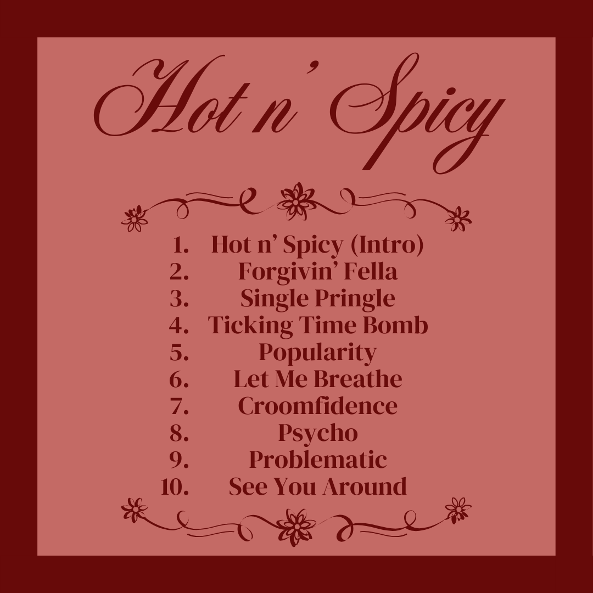
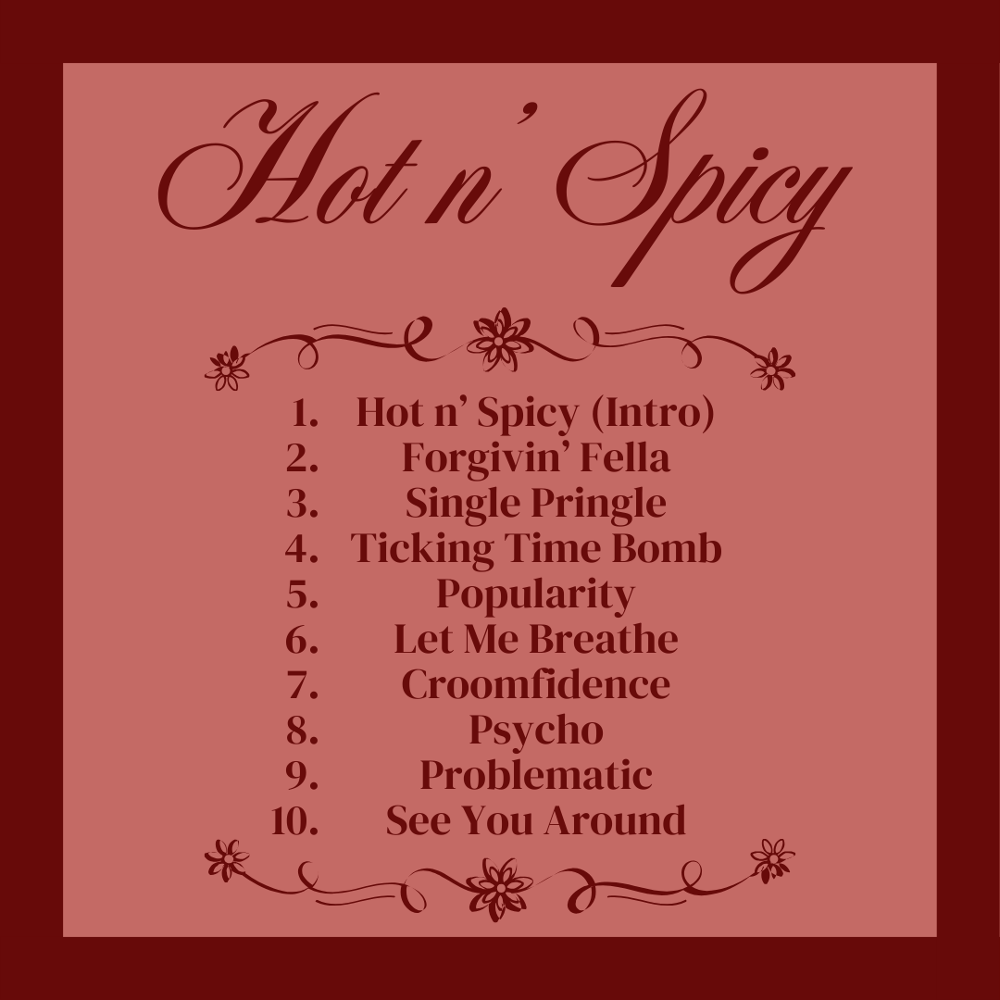

Dubbed by Aston himself as a 'worthy commerical successor to "Cruel Day"', "Hot n' Spicy" is Aston's 5th Ola Album. Upon announcement, Aston implied that he is leaving a lot behind in this new era, saying that "he spent all of [2024] crying on his music, and now it's time to have a laugh."
 
